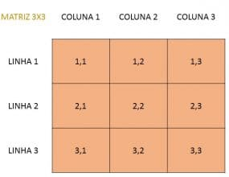
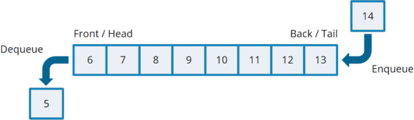
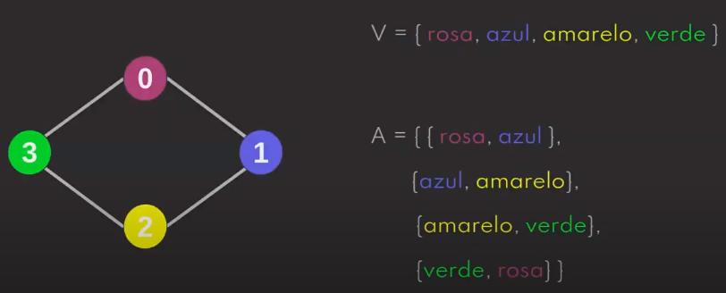
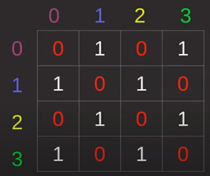
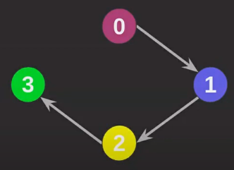
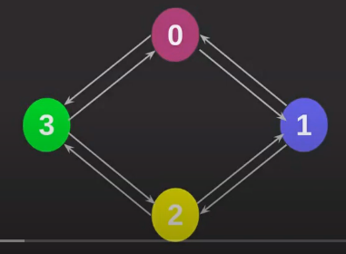
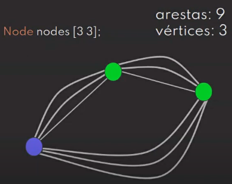
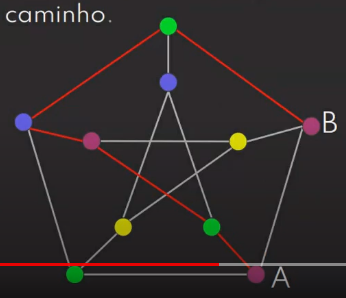
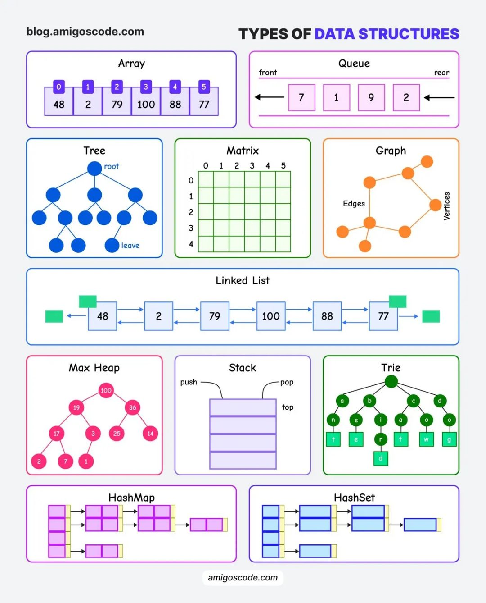
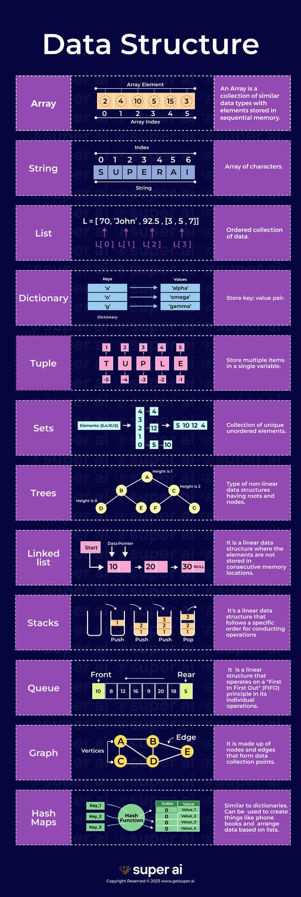

Estrutura de dados
Modelos e exemplos de estruturas de dados
Resumo em construção
Voltar
ED consiste na organização de dados na memória de um dispositivo. Dados estruturados da forma correta tendem a trazer melhor desempenho de processamento.
Vetor e Matriz (Array)
Consiste em armazenar coleção de elementos do mesmo tipo, onde cada um desses elemenos pode ser identificado e acessado por um índice (index) ou chave (key) relacionado ao mesmo. Exemplos abaixo em Python. Existem outras operações em Arrays, além de CRUD e ordenações, como concatenações, operações matemáticas, entre outros. Porém, dependerá da linguagem de programação utilizada. O tamanho (lenght ou size) do Array é a quantidade total dos índices. O lenght do array pode ser previamente definido com quantidade limitada de índices: Nesse caso, se tentar inserir quantidade de elementos superior à do array, ocorrerá overflow, onde em Stack, denomina-se Stack Overflow.
- Vetor: Array de estrutura unidimencional

- Matriz: Array de estrutura multidimencional

exemploVetor = ["leão","gato","zebra"]
exemploMatriz = [['Pedro',25],['Maria',19],['João',32]] #Array tridimencional, pois tem 3 dimensões/colunas
print(exemploVetor[2]) #zebra - 3º elemento, pois os índices iniciam-se em 0
print(exemploMatriz[1][0]) #Maria - Linha 1, coluna 0
Pilha (Stack)
Coleção ordenada de dados (Estrutura linear), baseada em LIFO (Last In First Out), onde o último elemento que entra (Push) na pilha será o 1º a sair (Pop) do topo. Elementos na base serão os últimos a serem retirados. No exemplo Python abaixo, utilizou-se array para representação.

stack = []
#Simular Push
stack.append('a')
stack.append('b')
stack.append('c')
print(stack)
#Pop simulando LIFO
print('\nElements popped from stack:')
print(stack.pop())
print(stack.pop())
print(stack.pop())
print(stack)
Fila (Queue)
Coleção ordenada de dados, baseada em FIFO (First In First Out), onde o 1º elemento que entra (Push/Put/Enqueue) no início (Head ou Rear) será o 1º a sair (Pop/Get/Dequeue) no fim (Tail ou Front).
Grafos (Graph)
Estrutura de dados que visa trabalhar com relações entre elementos. Um exemplo de grafo, onde há conexão entre elementos, é um mapa de estações de metrô. Grafos consistem em Vértice (nó), que são os pontos, e Aresta (associação), que são os traços que ligam os nós. A notação matemática é G = (V,A), onde G representa o grafo, V os vértices e A as arestas. A segunda imagem abaixo representa uma matriz de adjacência, no qual também pode-se representar, graficamente, um grafo: Os cabeçalhos das linhas e colunas representam os vértices, e as arestas representadas pelos índices internos na matriz (1 reprensenta que há aresta, 0 reprensenta que não há aresta).
 -
Grafo direcionado/dirigido (dígrafo): Onde há direcionamento específico nas arestas, influenciando no conhecimento/acesso dos vértices (Aresta entre vértices 0 e 1, onde o 0 possui conhecimento/acesso ao 1, mas não o contrário).
 -
Grafo não direcionado: Onde não há direcionamento específico nas arestas, ou seja, há conhecimento/acesso de ambos os vértices relacionados (Aresta entre vértices 0 e 1, onde ambos relacionam-se, ou seja, podem ser acessados).

Grau: Quantidade de arestas que saem de um vértice (No grafo não direcionado acima, todos os vértices têm grau 2). Dígrafos diferenciam grau de saída (Arestas que saem do vértice) e grau de entrada (Arestas que chegam no vértice), onde o grau total é a soma de ambos.
Simetria (Dígrafos simétricos): Acontece em dígrafos onde, para cada aresta de entrada tem-se uma aresta de saída, além de não possuir autoloop. Ainda, todo grafo não direcionado é simétrico.
-
Grafo simples: Há somente 1 aresta para o mesmo par de vértices.

-
Multigrafo: Quando há autoloop (Autoloop é aresta do vértice com ele mesmo) e/ou mais de uma aresta em um mesmo par de vértices.

-
Grafo denso: Quando a quantidade de arestas é o quadrado da quantidade de vértices (Exemplo: Grafo com 3 vértices e 9 arestas). Utilizam-se estruturas básicas, como arrays, para representá-los na prática, pois tendem a serem grafos grandes e, portanto, pesados.
 -
Grafo esparso: Quando não é grafo denso.

Caminho: Conjunto de arestas que conecta vértices. Quando há caminho entre vértices, denomina-se vértices conexos (Abaixo, A e B são conexos. B e C são desconexos).
Ciclo: Quando há outro caminho de volta para o vértice de origem, que não retorne pelo mesmo caminho de ida, ou seja, sem repetir vértices utilizados previamente (Abaixo, A e B tem um caminho para ida, e outro de B e A para volta, sem realizar a mesma passagem da ida).
* A linha vermelha acima, sob o grafo, é referente ao print da imagem, não tendo relações com o grafo em si.
Exemplo:
Implementação, em Java, de criação e busca/percorrimento em grafos, via algoritmo DFS (Deep First Search - Busca em profundidade) e BFS (Breadth First Search - Busca em largura).

* A linha vermelha acima, sob o grafo, é referente ao print da imagem, não tendo relações com o grafo em si.
Amigo.java (Classe):
# O método 'fazerAmizade' relacionará os elementos (Objetos Amigo)
package prod;
import java.util.ArrayList;
public class Amigo {
private String nome;
private int grau;
private ArrayList<Amigo> amigos = new ArrayList<Amigo>();
public Amigo(String nome) {
this.nome = nome;
}
public void fazerAmizade (Amigo a) {
if(!isAmigo(a)) {
amigos.add(a);
grau += 1;
}
}
public boolean isAmigo (Amigo a) {
for (Amigo amigo : this.amigos) {
if (amigo == a)
return true;
}
return false;
}
public ArrayList<Amigo> getAmigos(){return this.amigos;}
public String toString(){return this.nome;}
}
GrafoDeAmigos.java (Classe):
# Onde adiciona as adjacências ao vértice, criando suas arestas (criarAmizadeEntre) e estão os métodos de busca
package prod;
import java.util.ArrayDeque;
import java.util.ArrayList;
public class GrafoDeAmigos {
ArrayList<Amigo> visitados;
public void criarAmizadeEntre(Amigo n, Amigo m) {
n.fazerAmizade(m);
m.fazerAmizade(n);
}
public void DFS (Amigo a) {
System.out.println("> Busca em Profundidade");
visitados = new ArrayList<Amigo>();
realDFS(a);
}
public void realDFS (Amigo a) {
if (!visitados.contains(a)) {
System.out.println(a.toString());
visitados.add(a);
for(Amigo amigo : a.getAmigos()) {
realDFS(amigo);
}
}
}
public void BFS (Amigo a) {
System.out.println("> Busca em Largura");
ArrayDeque<Amigo> fila = new ArrayDeque<Amigo>();
visitados = new ArrayList<Amigo>();
visitados.add(a);
fila.addFirst(a);
while(!fila.isEmpty()) {
Amigo amigo = fila.removeLast();
for (Amigo iterator : amigo.getAmigos()) {
if(!visitados.contains(iterator)) {
System.out.println(iterator.toString());
fila.push(iterator);
visitados.add(iterator);
}
}
}
}
}
Faculdade.java (Classe Main):
# Criação do grafo e, bem abaixo, as duas buscas
package prod;
import javax.management.loading.ClassLoaderRepository;
import java.util.ArrayList;
public class Faculdade {
public static void main(String[] args) {
ArrayList<Amigo> amigos = new ArrayList<Amigo>();
amigos.add(new Amigo("João")); // 0
amigos.add(new Amigo("Clarisse"));
amigos.add(new Amigo("Edivaldo"));
amigos.add(new Amigo("Maria"));
amigos.add(new Amigo("Pedro"));
amigos.add(new Amigo("Gabriella")); // 5
amigos.add(new Amigo("Marcos"));
amigos.add(new Amigo("Benedita"));
amigos.add(new Amigo("Sara"));
amigos.add(new Amigo("Fernando")); // 9
GrafoDeAmigos gda = new GrafoDeAmigos();
gda.criarAmizadeEntre(amigos.get(0), amigos.get(5));
gda.criarAmizadeEntre(amigos.get(0), amigos.get(1));
gda.criarAmizadeEntre(amigos.get(5), amigos.get(9));
gda.criarAmizadeEntre(amigos.get(5), amigos.get(4));
gda.criarAmizadeEntre(amigos.get(1), amigos.get(4));
gda.criarAmizadeEntre(amigos.get(1), amigos.get(2));
gda.criarAmizadeEntre(amigos.get(9), amigos.get(6));
gda.criarAmizadeEntre(amigos.get(2), amigos.get(8));
gda.criarAmizadeEntre(amigos.get(8), amigos.get(7));
gda.criarAmizadeEntre(amigos.get(8), amigos.get(3));
gda.DFS(amigos.get(0));
gda.BFS(amigos.get(0));
}
}
Conclusão:
Percorrendo, a partir da aresta 0, listará os objetos conforme seus vértices vão sendo percorridos. Utilizando a aresta Edivaldo(2) como destaque de destino, os algoritmos apresentam a ordem de busca de formas diferentes.
> Busca em Profundidade (DFS)
Nesse método, entrará profundamente nos vértices, alcançado primeiramente as arestas nas pontas do grafo.
João
Gabriella
Fernando
Marcos
Pedro
Clarisse
- Edivaldo
Sara
Benedita
Maria
> Busca em Largura (BFS)
Nesse método, geralmente é alcançada a aresta mais próxima do vértice percorrido, onde a busca ocorre por meio de camadas, onde as arestas próximas ao ponto de origem tendem a serem encontradas antes.
Gabriella
Clarisse
Fernando
Pedro
- Edivaldo
Marcos
Sara
Benedita
Maria
Resumos
 Elaborado por Mateus Schwede
ubsocial.github.io